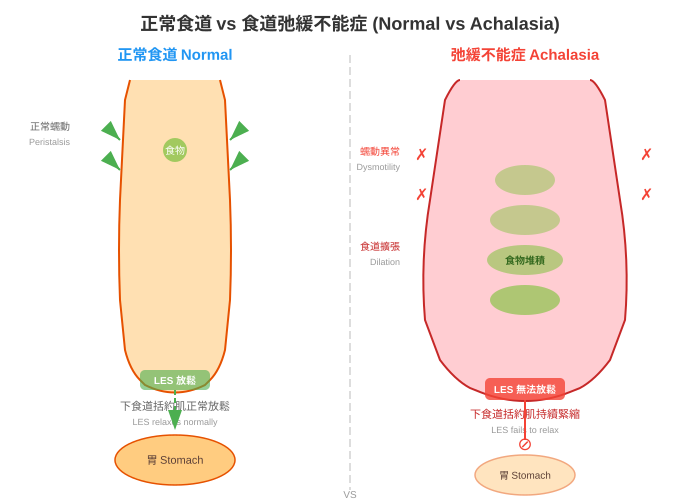

食道弛緩不能症（Achalasia）是一種罕見的食道運動功能障礙（Esophageal Motility Disorder）。簡單來說，就是食道（Esophagus）下方的肌肉「忘記放鬆」，導致食物無法順利進入胃部（Stomach）。
正常情況下，當我們吞嚥食物時，食道會像波浪一樣將食物往下推，食道最下方的括約肌（Lower Esophageal Sphincter, LES）會適時打開，讓食物進入胃中。但在食道弛緩不能症的患者身上，這個括約肌無法正常放鬆，食物就「卡」在食道裡，造成吞嚥困難。

圖：正常食道（左）與食道弛緩不能症（右）的比較。正常食道的下食道括約肌會在吞嚥時放鬆讓食物通過；弛緩不能症患者的下食道括約肌無法放鬆，導致食物堆積。想像食道是一條通往胃的隧道，隧道的出口有一扇門（下食道括約肌）。正常人的這扇門會在食物到達時自動打開；但食道弛緩不能症患者的門卻「鎖住了」，不管食物怎麼推，門都很難打開。
以下示意圖說明正常吞嚥與食道弛緩不能症的差異：
graph TD
subgraph 正常吞嚥
A1[食物進入口腔] --> B1[食道蠕動<br/>推送食物向下]
B1 --> C1[下食道括約肌<br/>正常放鬆打開]
C1 --> D1[食物順利進入胃部]
end
subgraph 食道弛緩不能症
A2[食物進入口腔] --> B2[食道蠕動減弱<br/>或完全喪失]
B2 --> C2[下食道括約肌<br/>無法放鬆 X]
C2 --> D2[食物堆積在食道<br/>造成吞嚥困難]
end
style C1 fill:#4CAF50,color:#fff
style C2 fill:#f44336,color:#fff
style D1 fill:#4CAF50,color:#fff
style D2 fill:#f44336,color:#fff食道弛緩不能症是一種罕見疾病（Rare Disease）：
| 項目 | 數據 |
|---|---|
| 發生率（Incidence） | 每年每 10 萬人約 1 ~ 1.6 人 |
| 盛行率（Prevalence） | 每 10 萬人約 10 ~ 13 人 |
| 好發年齡 | 多見於 25 ~ 60 歲，但任何年齡皆可能發生 |
| 性別差異 | 男女比例大致相同 |
提醒： 雖然罕見，但若有持續性吞嚥困難，仍應儘早就醫檢查。
目前醫學界對食道弛緩不能症的確切病因尚不完全清楚，但研究指向以下可能原因：
食道壁內負責控制肌肉放鬆的神經細胞逐漸退化、消失，導致括約肌無法正常接收「放鬆」的訊號。
目前最受支持的理論之一。研究認為，身體的免疫系統可能錯誤地攻擊食道內的神經節細胞（Ganglion Cells），造成神經損傷。部分患者同時患有其他自體免疫疾病，支持了這一推論。
少數案例顯示家族中有多位成員罹患此病，但目前尚未找到明確的遺傳基因。
有研究指出，某些病毒感染可能觸發免疫反應，間接導致食道神經受損。
重要： 食道弛緩不能症不是因為飲食習慣不良、壓力大或情緒問題所引起的。如果您被診斷出此病，請不要自責。
食道弛緩不能症通常是慢性且漸進式的疾病：
好消息： 雖然無法完全「治癒」，但透過適當治療，絕大多數患者可以大幅改善症狀，恢復正常飲食和生活品質。
許多患者在得知診斷後最擔心的問題就是：「這會不會是癌症？」
請放心： 透過規律回診與追蹤，醫師可以及早發現任何異常變化。
如果您懷疑自己可能有食道弛緩不能症，可以先掛以下科別：
📋 請填入貴院資料：
- 本院負責科別：_______________
- 聯絡電話 / 分機：_______________
- 門診時間：_______________
- 主治醫師：_______________
- 本院特色 / 年手術量：_______________
| 重點 | 說明 |
|---|---|
| 什麼是食道弛緩不能症？ | 食道下方括約肌無法放鬆，食物難以進入胃部 |
| 常見嗎？ | 罕見疾病，每年每 10 萬人約 1 人發生 |
| 原因 | 可能與自體免疫、神經退化有關，確切病因未明 |
| 會好嗎？ | 無法完全治癒，但治療可大幅改善症狀 |
| 是癌症嗎？ | 不是癌症，但需定期追蹤 |